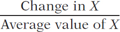

In order for investors to know whether they can earn significant profits in the ambulance business, they need to know the price elasticity of demand for ambulance rides. With this information, investors can accurately predict whether or not a significant rise in the price of an ambulance ride results in an increase in revenue.
Figure 5-1 shows a hypothetical demand curve for an ambulance ride. At a price of $200 per ride, consumers would demand 10 million rides per year (point A); at a price of $210 per ride, consumers would demand 9.9 million rides per year (point B).
Figure 5-1, then, tells us the change in the quantity demanded for a particular change in the price. But how can we turn this into a measure of price responsiveness? The answer is to calculate the price elasticity of demand.
The price elasticity of demand is the ratio of the percent change in the quantity demanded to the percent change in the price as we move along the demand curve.
The price elasticity of demand is the ratio of the percent change in quantity demanded to the percent change in price as we move along the demand curve. As we’ll see later in this chapter, the reason economists use percent changes is to obtain a measure that doesn’t depend on the units in which a good is measured (say, a 1-mile ambulance trip versus a 10-mile ambulance trip). But before we get to that, let’s look at how elasticity is calculated.
139
To calculate the price elasticity of demand, we first calculate the percent change in the quantity demanded and the corresponding percent change in the price as we move along the demand curve. These are defined as follows:
(5-1) % change in quantity demanded = × 100
and
(5-2) % change in price = × 100
In Figure 5-1, we see that when the price rises from $200 to $210, the quantity demanded falls from 10 million to 9.9 million rides, yielding a change in the quantity demanded of 0.1 million rides. So the percent change in the quantity demanded is
% change in quantity demanded = × 100 = −1%
The initial price is $200 and the change in the price is $10, so the percent change in price is
% change in price = × 100 = 5%
To calculate the price elasticity of demand, we find the ratio of the percent change in the quantity demanded to the percent change in the price:
(5-3) Price elasticity of demand =
In Figure 5-1, the price elasticity of demand is therefore
Price elasticity of demand = = 0.2
Notice that the minus sign that appeared in the calculation of the percent change in the quantity demanded has been dropped when we calculate this last equation, the price elasticity of demand. Why have we done this? The law of demand says that demand curves are downward sloping, so price and quantity demanded always move in opposite directions. In other words, a positive percent change in price (a rise in price) leads to a negative percent change in the quantity demanded; a negative percent change in price (a fall in price) leads to a positive percent change in the quantity demanded. This means that the price elasticity of demand is, in strictly mathematical terms, a negative number.
However, it is inconvenient to repeatedly write a minus sign. So when economists talk about the price elasticity of demand, they usually drop the minus sign and report the absolute value of the price elasticity of demand. In this case, for example, economists would usually say “the price elasticity of demand is 0.2,” taking it for granted that you understand they mean minus 0.2. We follow this convention here.
The larger the price elasticity of demand, the more responsive the quantity demanded is to the price. When the price elasticity of demand is large—when consumers change their quantity demanded by a large percentage compared to the percent change in the price—economists say that demand is highly elastic.
As we’ll see shortly, a price elasticity of 0.2 indicates a small response of quantity demanded to price. That is, the quantity demanded will fall by a relatively small amount when price rises. This is what economists call inelastic demand. And inelastic demand is exactly what enables an ambulance operator to increase the total amount earned by raising the price of an ambulance ride.
140
Price elasticity of demand compares the percent change in quantity demanded with the percent change in price. When we look at some other elasticities, which we will do shortly, we’ll learn why it is important to focus on percent changes. But at this point we need to discuss a technical issue that arises when you calculate percent changes in variables.
The best way to understand the issue is with a real example. Suppose you were trying to estimate the price elasticity of demand for gasoline by comparing gasoline prices and consumption in different countries. Because of high taxes, gasoline usually costs about three times as much per gallon in Europe as it does in the United States. So what is the percent difference between American and European gas prices?
Well, it depends on which way you measure it. Because the price of gasoline in Europe is approximately three times higher than in the United States, it is 200 percent higher. Because the price of gasoline in the United States is one-third as high as in Europe, it is 66.7 percent lower.
This is a nuisance: we’d like to have a percent measure of the difference in prices that doesn’t depend on which way you measure it. To avoid computing different elasticities for rising and falling prices we use the midpoint method.
The midpoint method is a technique for calculating the percent change. In this approach, we calculate changes in a variable compared with the average, or midpoint, of the starting and final values.
The midpoint method replaces the usual definition of the percent change in a variable, X, with a slightly different definition:
(5-4) % change in X =  × 100
where the average value of X is defined as
Average value of X =
When calculating the price elasticity of demand using the midpoint method, both the percent change in the price and the percent change in the quantity demanded are found using this method. To see how this method works, suppose you have the following data for some good:
| Price | Quantity demanded | |
| Situation A | $0.90 | 1,100 |
| Situation B | $1.10 | 900 |
To calculate the percent change in quantity going from situation A to situation B, we compare the change in the quantity demanded—a fall of 200 units—with the average of the quantity demanded in the two situations. So we calculate
% change in quantity demanded = × 100 = × 100 = −20%
In the same way, we calculate
% change in price = × 100 = × 100 = 20%
So in this case we would calculate the price elasticity of demand to be
Price elasticity of demand = = = 1
again dropping the minus sign.
141
The important point is that we would get the same result, a price elasticity of demand of 1, whether we go up the demand curve from situation A to situation B or down from situation B to situation A.
To arrive at a more general formula for price elasticity of demand, suppose that we have data for two points on a demand curve. At point 1 the quantity demanded and price are (Q1, P1); at point 2 they are (Q2, P2). Then the formula for calculating the price elasticity of demand is:
(5-5) Price elasticity of demand =
As before, when finding a price elasticity of demand calculated by the midpoint method, we drop the minus sign and use the absolute value.
Estimating Elasticities
You might think it’s easy to estimate price elasticities of demand from real-world data: just compare percent changes in prices with percent changes in quantities demanded. Unfortunately, it’s rarely that simple because changes in price aren’t the only thing affecting changes in the quantity demanded: other factors—such as changes in income, changes in tastes, and changes in the prices of other goods—shift the demand curve, thereby changing the quantity demanded at any given price.
To estimate price elasticities of demand, economists must use careful statistical analysis to separate the influence of the change in price, holding other things equal.
Economists have estimated price elasticities of demand for a number of goods and services. Table 5-1 summarizes some of these and shows a wide range of price elasticities. There are some goods, like gasoline, for which demand hardly responds at all to changes in the price. There are other goods, such as airline travel for leisure, or Coke and Pepsi, for which the quantity demanded is very sensitive to the price.
Notice that Table 5-1 is divided into two parts: inelastic and elastic demand. We’ll explain the significance of that division in the next section.
| Good | Price elasticity of demand |
| Inelastic demand | |
| Gasoline (short-run) | 0.09 |
| Gasonline (long-run) | 0.24 |
| Airline travel (business) | 0.80 |
| Soda | 0.80 |
| College (in-state tuition) | 0.87 |
| Elastic demand | |
| Housing | 1.2 |
| College (out-of-state tuition) | 1.2 |
| Airline travel (leisure) | 1.5 |
| Coke/Pepsi | 3.3 |
1. The price of strawberries falls from $1.50 to $1.00 per carton and the quantity demanded goes from 100,000 to 200,000 cartons. Use the midpoint method to find the price elasticity of demand.
2. At the present level of consumption, 4,000 movie tickets, and at the current price, $5 per ticket, the price elasticity of demand for movie tickets is 1. Using the midpoint method, calculate the percentage by which the owners of movie theaters must reduce price in order to sell 5,000 tickets.
3. The price elasticity of demand for ice-cream sandwiches is 1.2 at the current price of $0.50 per sandwich and the current consumption level of 100,000 sandwiches. Calculate the change in the quantity demanded when price rises by $0.05. Use Equations 5-1 and 5-2 to calculate percent changes and Equation 5-3 to relate price elasticity of demand to the percent changes.
142
Solutions appear at back of book.
The price elasticity of demand is equal to the percent change in the quantity demanded divided by the percent change in the price as you move along the demand curve, and dropping any minus sign.
In practice, percent changes are best measured using the midpoint method, in which the percent changes are calculated using the average of starting and final values.